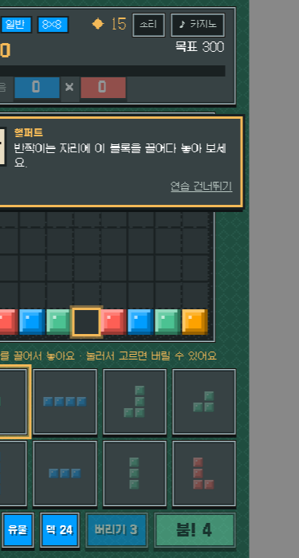
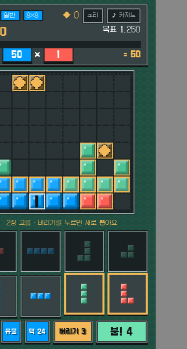
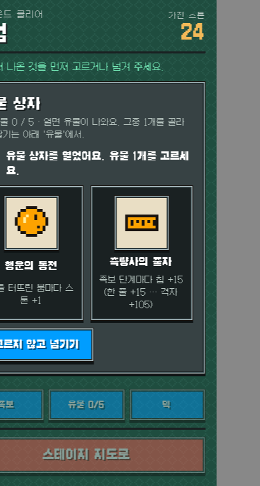

테스트 플레이 모집
Obstruo!
블록을 놓아 줄을 지우고, 광석과 유물로 덱을 키워 6스테이지 보스를 넘는 퍼즐 로그라이크예요. 테트리스의 손맛에 발라트로의 덱 빌딩을 더했어요. 지금은 휴대폰 브라우저에서 바로 할 수 있는 테스트판이에요.



어떻게 하나요
- 처음이면 핼퍼트가 연습 갱도에서 기본을 알려 줘요(5~8분). 언제든 건너뛸 수 있어요.
- 한 판은 6스테이지 × 3라운드예요. 라운드마다 붐 4번 안에 목표 점수를 넘기면 돼요.
- 지면 힘은 사라지지만 탐사 점수와 발견 도감은 남아요. 여러 판을 거듭하면 새 유물과 효과가 열려요.
- 진행은 이 브라우저에만 저장돼요. 다른 기기나 시크릿 창에서는 처음부터예요.
무엇을 보나요
테스트 기간에는 익명 플레이 기록을 받아요. 어디까지 갔나, 라운드에 몇 초 걸렸나, 상점에서 무엇을 샀나, 연습 갱도를 어디서 건너뛰었나 같은 숫자뿐이에요. 이름·이메일·글은 받지 않고, 게임 첫 화면의 '끄기'로 언제든 끌 수 있어요.
알려진 것
- 목표 점수와 유물 수치는 아직 조정 중이에요. 너무 쉽거나 어려운 구간이 있으면 그게 바로 알고 싶은 거예요.
- 소리와 음악은 첫 터치 뒤에 나와요. 첫 화면의 '소리' 버튼으로 끌 수 있어요.
- 가로 화면과 PC 창은 아직 안 맞춰져 있어요.